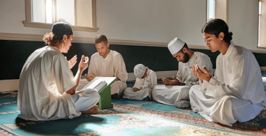
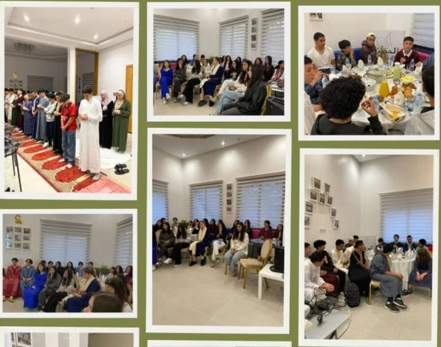
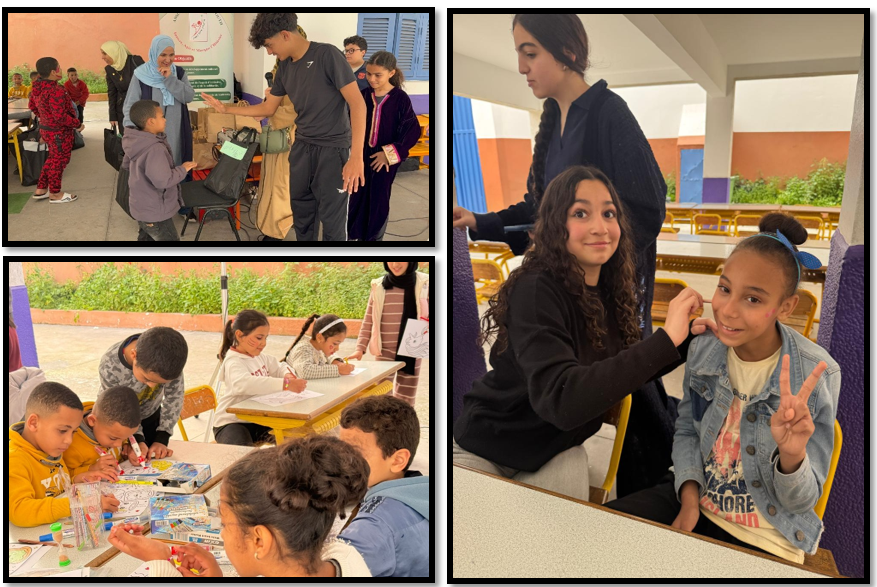

Des activités éducatives, spirituelles et culturelles pour accompagner les jeunes.
Just For Youth propose des assises, conférences, ateliers, actions sociales, excursions et voyages afin d’aider les jeunes à grandir avec confiance, valeurs et sens de l’engagement.

Assises du samedi matin
Un moment privilégié de ressourcement, d’échange et de construction identitaire.
Chaque samedi matin, Just For Youth offre aux collégiens et lycéens un moment privilégié de ressourcement identitaire à travers des assises dédiées. Ces rencontres permettent aux jeunes de se reconnecter à leur culture marocaine, d’échanger autour de valeurs essentielles et de grandir dans un cadre bienveillant, propice à l’écoute et à l’épanouissement personnel.
Ces assises sont également l’occasion d’échanger des idées, de partager des expériences et de renforcer les liens identitaires dans une ambiance stimulante et conviviale.
Programme Ramadan
Durant le mois sacré de Ramadan, nous proposons des moments de rencontre, de spiritualité et de solidarité.
Ftour collectif
Pendant le mois béni de Ramadan, nous organisons plusieurs activités enrichissantes afin de renforcer les liens communautaires. Les participants se réunissent notamment autour de ftours collectifs, dans une ambiance conviviale, fraternelle et chaleureuse.

Actions sociales
Nous menons également des actions solidaires, notamment pendant Ramadan à travers la distribution d’Iftar boxes, ainsi que d’autres initiatives visant à promouvoir la solidarité et l’entraide au sein de notre communauté.

Excursions et voyages
Des expériences éducatives et immersives pour découvrir le patrimoine, renforcer les liens et vivre des moments mémorables.
Visites culturelles
Découverte de mosquées, monuments, musées historiques et lieux emblématiques du patrimoine national.
Excursions éducatives
Visites de bibliothèques et d’espaces culturels pour mieux comprendre l’histoire et le patrimoine islamique.
Voyages au Maroc
Découverte de villes chargées d’histoire comme Fès, Marrakech, Rabat, Meknès et d’autres lieux riches en culture.
Randonnées & retraites
Activités en pleine nature combinées à des temps de réflexion, d’échange et d’ateliers collectifs.
Artisanat marocain
Journées découvertes autour des arts et métiers traditionnels, pour valoriser la richesse culturelle marocaine.
Voyage Omra
Un voyage spirituel encadré vers les lieux saints, pour renforcer la foi, les valeurs et créer des souvenirs inestimables.
Voyage vers les lieux saints : Omra
Nous proposons aux jeunes un voyage inoubliable vers les lieux saints afin d’accomplir une Omra dans un cadre encadré, bienveillant et formateur. Ce périple est accompagné par une équipe expérimentée et attentive, assurant un suivi de qualité tout au long du voyage.
Cette expérience vise à renforcer leur foi, enrichir leur compréhension des valeurs et de l’éthique propres à leur culture, et créer des souvenirs précieux.
Conférences et débats
Des rencontres pour réfléchir, comprendre, questionner et échanger autour de sujets éducatifs, culturels, sociaux et contemporains.
Conférences thématiques
Organiser des conférences et des débats est une manière essentielle de promouvoir les objectifs éducatifs, culturels et sociaux de l’association. Ces rencontres permettent de définir des concepts fondamentaux, d’expliquer leur application dans la vie quotidienne et d’accompagner les jeunes dans leur réflexion.
Objectifs des conférences
- Éduquer et sensibiliser les jeunes.
- Éclairer le public sur des questions culturelles, sociales et contemporaines.
- Corriger certaines idées fausses par des réponses fondées.
- Encourager la réflexion sur les défis actuels.
- Favoriser le dialogue, le leadership et l’engagement des jeunes.
Ateliers dans les établissements scolaires
Nous assurons également des ateliers de sensibilisation dans les établissements scolaires. Animés par des intervenants expérimentés, ces ateliers créent un cadre propice à la réflexion, à l’échange d’idées et à l’engagement identitaire.
Les jeunes sont encouragés à participer activement, à poser leurs questions et à s’impliquer dans des débats qui nourrissent leur foi, renforcent leur identité et contribuent à bâtir une communauté unie et consciente de ses valeurs.
Participer aux programmes Just For Youth
Inscrivez votre enfant, devenez bénévole ou soutenez nos actions éducatives.